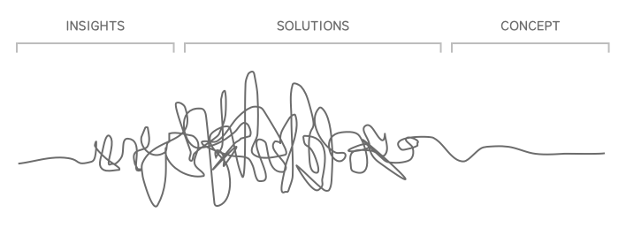
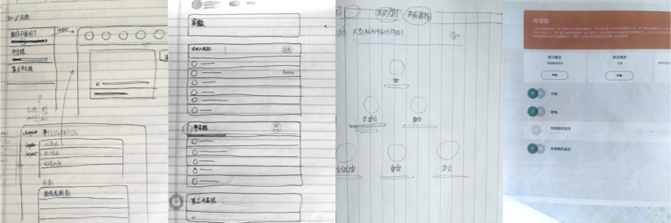

洋葱数学是一款以学生为中心的深度在线学习产品。这个产品的背后是一群怀揣教育理想的青年，希望能做些事情，推动教育创新，促进教育公平。我们希望通过这个产品实现愿景：让更多学生接触到优质的教育资源，享受到个性化的教学。作为产品团队的初期成员，也是很长一段时间内唯一的设计师，我负责开展设计研究，制作草图原型，建立设计规范，并追踪数据、持续迭代改进产品。
探索方向
要寻找到合适的产品切入点，必须审视现在的教学体系中到底有什么困境。为此，所有成员一起进行了思路整理，大家对教育问题的洞察被转述成“我们如何”句式的问题——我们怎么才能提高学习成绩？如何能提高学习兴趣？怎么给差异的学生不同的帮助？如何帮助学生达到布鲁姆教育目标的更高层级?… 这些问题会牵引出不同的解决方案，再结合组织理念、优先级等维度对这些方案筛选和组合，收敛到这个产品方向上——提供优质内容的数字化教学环境。

产品设计
数字化学习产品的核心是其教学理念，产品的形态则是把个核心以用户界面的方式表达出来。在洋葱数学，教学理念的把控由课程研发团队主导，他们会决定知识点如何拆分、视频的作用和时长等等。因此，作为设计师我必须紧密的与他们合作，反复研讨用户界面是否准确的反映了教学设计的需求。 比如，根据课程内容设计信息架构，把学习单元包装成任务，这样学生可以更简单的选择和追踪自己的学习进度。


改善学习体验
产品诞生以后，我们密切关注用户行为数据以及学习效果，以发现可以改进的地方。借助Google Analytics, Umeng等服务提供的数据，我持续检测转化率、留存率、学习数据等核心数据的变化。运用热力图、滚动图和录屏，观测用户在自然场景里的真实行为，用来和其他途径得到的数据进行互相参照。

上线后一段时间，学生在活跃程度上并不尽如人意。经过一系列反思和调研，我们认为原因有二，首先，没有引导用户按合理的节奏学习，达到最好的学习效果，第二，没有什么机制能正向激发学生更想学。因此我重新设计了学生初次使用的体验，引导用户学习如何使用洋葱数学。借鉴游戏化思维，尝试引入每周目标，让学生自己设定目标；在小阶段学习完成时增强即时反馈，比如奖励学生积分，赋予学生成就感。


提高颜值
洋葱数学的核心用户群青少年，容易受到产品的Look and feel的影响。适合的产品形象既可以改善第一印象，加大他们留下来的机会，也能够提升使用时的情感感受。因此我们使用明快的颜色，圆润的外观，帮助塑造出亲和的产品形象。

回顾
在创业团队的这段时间给予我很多宝贵的经验。我得以在产品生命周期中实践精益法则，有试错也有学习。对产品的Ownership促使自己拓展各种能力应对随时而来的问题，也从同行的伙伴身上学到了很多新鲜的思维和方法。